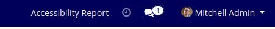

Features
This module add one report
Accessibility Report
at top right corner.When user click on that report it will redirect user to that report.
Setup Instructions
Add .html file inside this module's static/src/html folder with
tgr.html
name. This html file will open when user click on Accessibility report.
Accessibility Report
